هذا الدليل مكتوب لمن يستعمل البرنامج لأول مرة. لا تحتاج خبرة سابقة بالحاسوب: اتبع الخطوات بالترتيب.
حفظ، كما تظهر في البرنامج.
الإعدادات← بطاقة
دليل الاستخدام←
فتح الدليل. ولطباعته اضغط Ctrl+P في المتصفح: كل فصل يبدأ في صفحة جديدة.
نصّب البرنامج، وعند فتحه أول مرة على حاسوب جديد يسألك عن اللغة، ثم عن مكان البيانات، ثم تسجّل الدخول.
نزّل ملف التنصيب Inventory-Management-Setup من صفحة الإصدارات (أو خذه من الفلاش) وشغّله. الملف نفسه للتنصيب الجديد ولتحديث نسخة قديمة.
Windows protected your PC. إذا كنت قد نزّلته من صفحة الإصدارات الرسمية اضغط More info (مزيد من المعلومات) ثم Run anyway (التشغيل على أي حال).
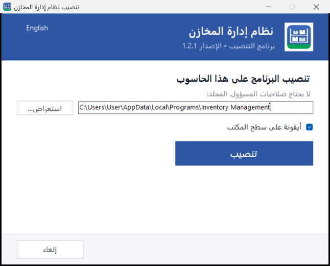
استعراض….
تنصيب.
تشغيل البرنامج الآنواضغط
إنهاء.
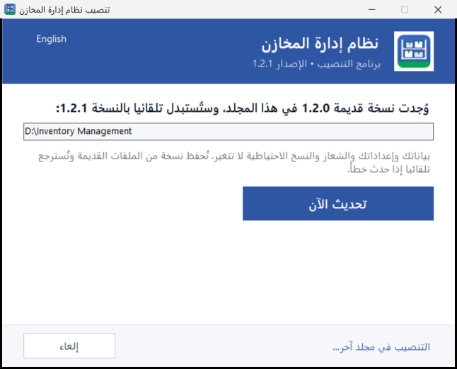
تحديث الآن. إذا كان البرنامج مفتوحا (ولو كان بجانب الساعة) يُطلب منه أن يُغلق؛ إذا سألك عن حفظ سند فأجبه.
تم التحديثاضغط
إنهاء.
النسخة 1.2.0 وما قبلها لا تستطيع أن تُغلق نفسها، فتظهر هذه الصفحة:
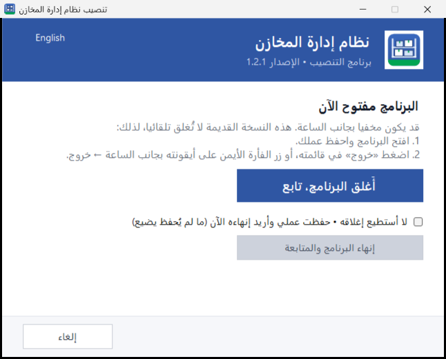
احفظ عملك، ثم زر الفأرة الأيمن على أيقونة البرنامج بجانب الساعة ← خروج
، ثم اضغط أُغلق البرنامج، تابع
. لا تستعمل إنهاء البرنامج والمتابعة
إلا إذا لم تستطع إغلاقه وكان عملك محفوظا.
لديك نسخة أقدم… هل تريد استبدالها بهذه النسخة؟
في أول تشغيل على الحاسوب، وقبل أي شيء آخر، تظهر نافذة اختر لغة البرنامج / Choose the program language
:
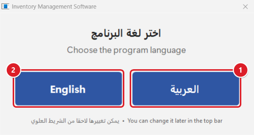
العربية: الواجهة العربية من اليمين إلى اليسار.
English: الواجهة الإنجليزية من اليسار إلى اليمين.
يصبح اختيارك لغة هذا الحاسوب. بعدها يستطيع كل مستخدم تغيير لغته بالرابط English
/ عربي
في شاشة الدخول أو في الشريط العلوي (شرحه).
البيانات (المواد والسندات والأرصدة) محفوظة في ملف بيانات (امتداده .AMR) أو على سيرفر في الشبكة. إذا لم يجد البرنامج البيانات تظهر نافذة إعدادات الاتصال والسيرفر
:
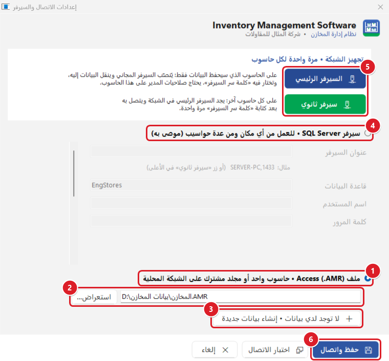
إعدادات الاتصال والسيرفر
استعراض…لاختيار ملف بيانات موجود.
لا توجد لدي بيانات • إنشاء بيانات جديدة: ينشئ ملف بيانات فارغا لشركة جديدة.
السيرفر الرئيسيو
سيرفر ثانوي.
حفظ واتصال: يحفظ الاختيار ويفتح شاشة الدخول. زر
اختبار الاتصاليتأكد فقط دون حفظ.
ملف Access (.AMR).
استعراض…2 واختر ملف البيانات (مثلا بيانات المخازن.AMR) ثم
Open.
حفظ واتصال6.
لا توجد لدي بيانات • إنشاء بيانات جديدة3.
Save.
تم إنشاء بيانات جديدة فارغة: ادخل باسم المستخدم 1 وكلمة المرور 1.
كلمة المرور 1 للبيانات الجديدة معروفة للجميع، لذلك لا يسمح البرنامج بالعمل بها. بعد الضغط على دخول
أول مرة تظهر رسالة هذه أول مرة تدخل فيها إلى البيانات الجديدة… يجب تغييرها الآن
، ثم نافذة تغيير كلمة المرور
:
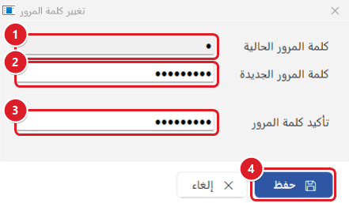
تغيير كلمة المرورفي أول دخول
حفظ: يُفتح البرنامج.
إلغاءفلن يتم الدخول، وسيُطلب التغيير مرة أخرى في الدخول التالي.
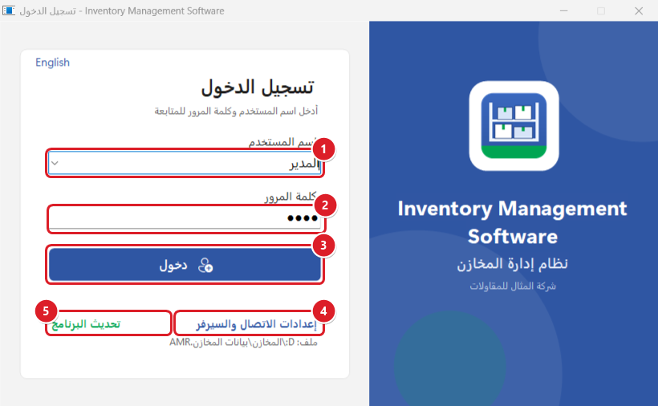
تسجيل الدخول
دخول(أو اضغط Enter).
إعدادات الاتصال والسيرفر: لتغيير مكان البيانات (نفس النافذة السابقة).
تحديث البرنامج: يبحث عن إصدار جديد ويثبّته قبل الدخول (شرحه).
وفي أعلى بطاقة الدخول الرابط English
لفتح شاشة الدخول والبرنامج باللغة الإنجليزية.
بعد الدخول تظهر الشاشة الرئيسية. منها تصل إلى كل عمل في البرنامج.
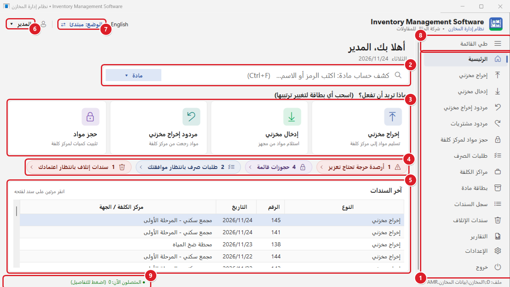
الإعداداتو
خروجفي أسفلها.
أرصدة حرجة تحتاج تعزيزو
أرصدة سالبةو
حجوزات قائمةو
طلبات صرف بانتظار موافقتكو
سندات إتلاف بانتظار اعتمادك. اضغط التنبيه لفتح التقرير أو القائمة الخاصة به.
طي القائمة: يصغّر القائمة الجانبية لتبقى الأيقونات فقط.
المتصلون الآن: عدد من يستعمل البرنامج الآن. اضغطه لمعرفة أسمائهم وحواسيبهم.
ضع البطاقة التي تستعملها أكثر في المكان الذي يناسبك:
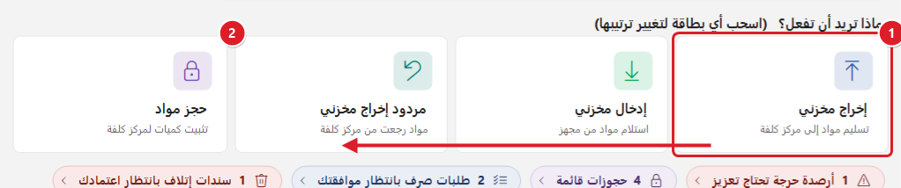
في الشاشة الرئيسية مربع بحث واحد. اختر أولا عمّ تبحث، ثم اكتب:
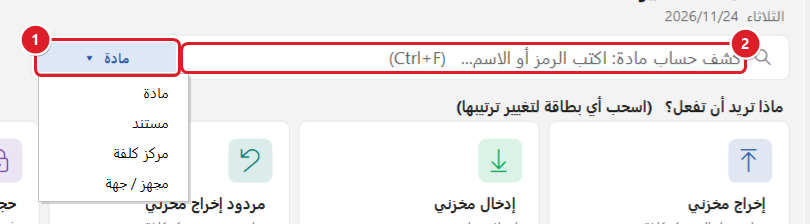
| الاختيار | ماذا تكتب | ماذا يُفتح عند الاختيار من النتائج |
|---|---|---|
| مادة | الرمز أو جزء من الاسم | كشف حساب المادة: كل حركاتها من البداية إلى اليوم مع الرصيد، في نافذة التقارير. |
| مستند | رقم السند، أو مركز الكلفة، أو المجهز، أو كلمة من الملاحظات | السند نفسه. |
| مركز كلفة | الاسم أو الرمز | كشف مركز الكلفة في نافذة التقارير. |
| مجهز / جهة | الاسم | كشف الجهة في نافذة التقارير. |
اختر مادة واكتب، أو اضغط Ctrl+F (أو F3) من أي شاشة. تظهر نافذة النتائج:
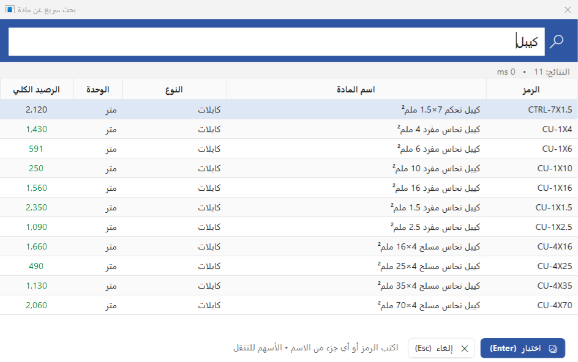
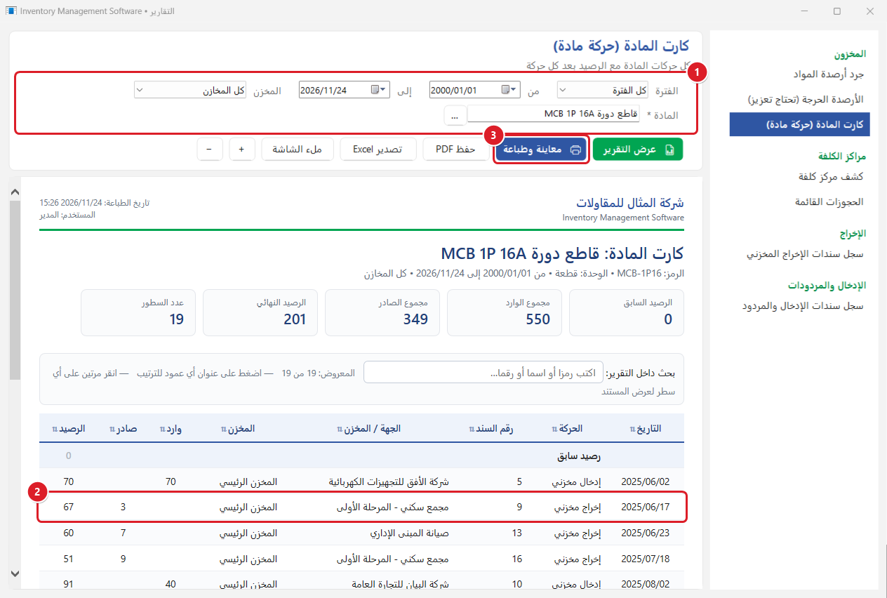
التقارير
كل الفترةوالمادة مختارة. غيّر الفترة أو المخزن إذا أردت ثم
عرض التقرير.
معاينة وطباعةالكشف.
التقارير. من ليست لديه هذه الصلاحية ولديه صلاحية إدارة المواد تُفتح له نافذة المادة. ولتعديل المادة نفسها افتح بطاقة مادة من القائمة الجانبية.
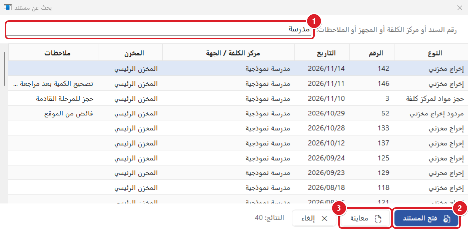
فتح المستندالمختار (أو نقرتان على سطره، أو Enter).
معاينة: عرض السند كما يُطبع دون فتحه للتعديل.
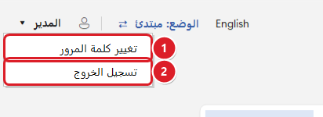
تغيير كلمة المرور: اكتب كلمة المرور الحالية ثم الجديدة مرتين، ثم
حفظ.
تسجيل الخروج: يعود إلى شاشة الدخول ليدخل مستخدم آخر دون إغلاق البرنامج.
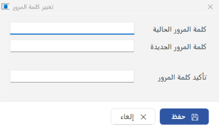
تغيير كلمة المرور
زر الإغلاق ✕ في أعلى النافذة لا يُغلق البرنامج، بل يخفيه بجانب ساعة ويندوز (أسفل يمين الشاشة أو يسارها) ليبقى جاهزا:
خروج، أو
خروجفي أسفل القائمة الجانبية.
اضغط طي القائمة
8 لتصغير القائمة وإعطاء مساحة أكبر للشاشة. تبقى الأيقونات فقط؛ ضع الفأرة على أيقونة لترى اسمها. يتذكر البرنامج اختيارك.
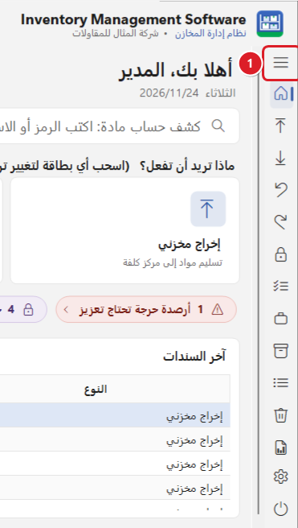
توسيع القائمةلإظهار الأسماء
اضغط الوضع: مبتدئ ⇄
7 في أعلى الشاشة للتحويل. يُحفظ الوضع لكل مستخدم.
| وضع المبتدئ | الوضع المتقدم |
|---|---|
شاشات مبسطة وأزرار كبيرة: السندات اليومية، سجل السندات، مراكز الكلفة، بطاقة مادة، التقارير. | كل الشاشات: نقل مخزني، طلبات الشراء، الجرد الفعلي، سندات الإتلاف، الجهات والأشخاص، المخازن والأنواع، المستخدمون. |
| سطر أخضر في كل سند يشرح الخطوات ①②③. | اختصارات لوحة المفاتيح مكتوبة على الأزرار، والتنقل بين السندات بـ PageUp/PageDown. |
| رسالة تأكيد تلخّص السند قبل الحفظ. | الحفظ مباشرة دون رسالة تأكيد، وسعر الوحدة في الإدخال المخزني. |
| 4 بطاقات في الشاشة الرئيسية وتقارير أساسية. | حتى 6 بطاقات، ورسم بياني للسندات خلال آخر 12 شهرا، وكل التقارير. |
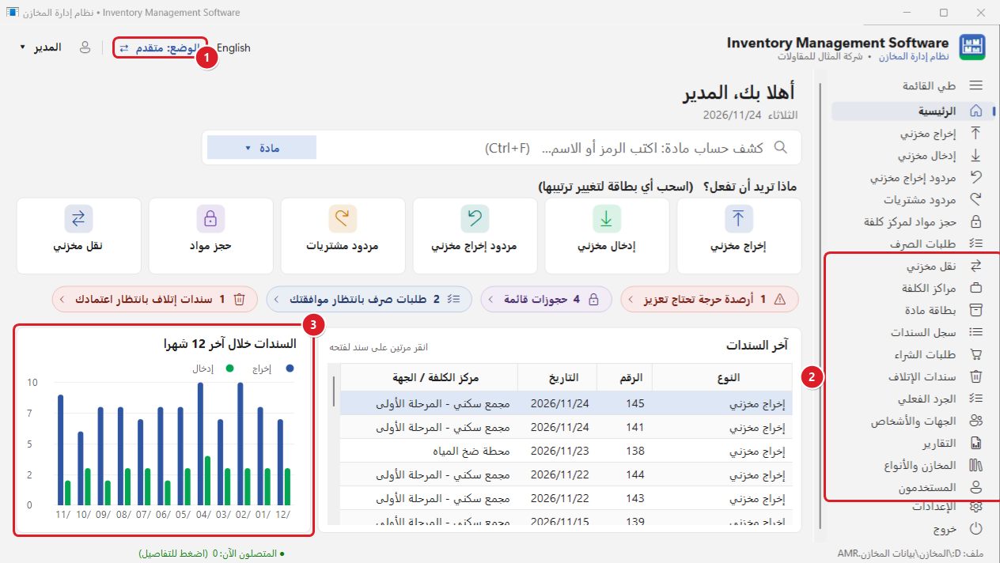
شاشة بطاقة مادة
(في القائمة الجانبية) فيها كل المواد المخزنية: إضافتها وتعديلها وأرصدتها وأماكنها على الرفوف.
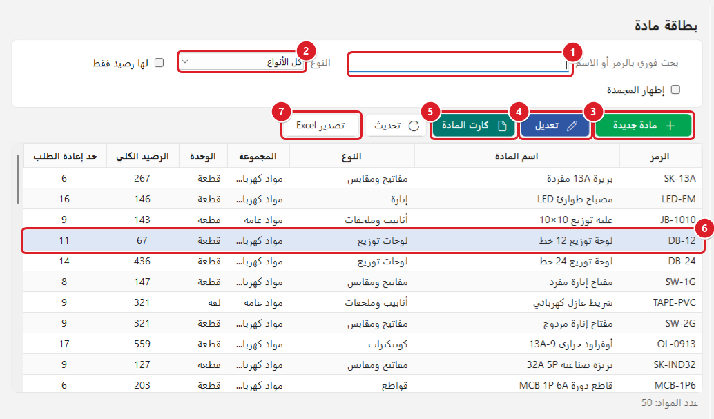
بطاقة مادة
لها رصيد فقطو
إظهار المجمدة.
+ مادة جديدة.
تعديلالمادة المختارة.
كارت المادة: كشف حساب المادة، أي حركاتها (إدخال وإخراج) مع الرصيد بعد كل حركة.
تصدير Excel: القائمة كما تظهر إلى ملف Excel.
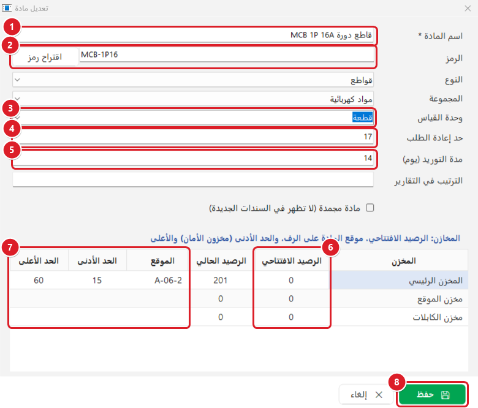
اقتراح رمزليقترح البرنامج رمزا. يُستعمل في البحث وقارئ الباركود.
الأرصدة الحرجة.
حفظ.
+ مادة جديدة3 في شاشة
بطاقة مادة.
اقتراح رمز.
الرصيد الافتتاحيفي سطر المخزن.
حفظ.
الرصيد الافتتاحيلإضافة كميات وصلت حديثا: استعمل الإدخال المخزني. بعد إقفال السنة لا يمكن تغيير الرصيد الافتتاحي.
لا يمكن حذف مادة لها حركات أو رصيد. بدلا من ذلك افتحها وعلّم مادة مجمدة (لا تظهر في السندات الجديدة)
ثم حفظ
. تبقى حركاتها القديمة في التقارير.
من المخازن والأنواع
في القائمة الجانبية تضيف المخازن وأنواع المواد ومجموعاتها أو تغيّر أسماءها: إضافة
، تعديل الاسم
، حذف
(إذا لم يكن مستعملا).
مركز الكلفة هو الجهة التي تُحمَّل عليها المواد المُخرجة: مشروع أو قسم أو صيانة أو إدارة أو أخرى. يُختار في كل سند إخراج مخزني.
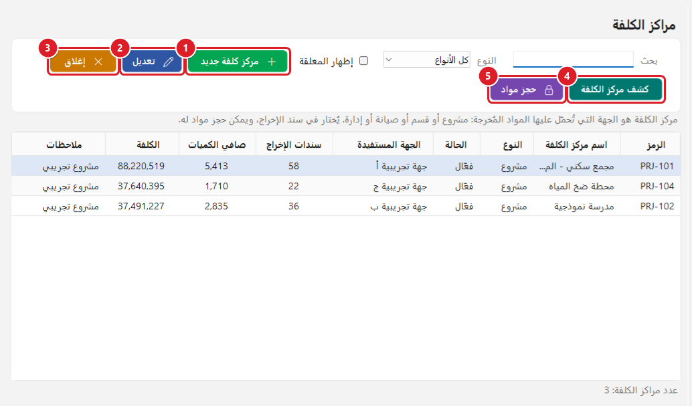
مراكز الكلفة
+ مركز كلفة جديد.
تعديلالمركز المختار (أو انقر مرتين على سطره).
إغلاق: مركز انتهى عمله لا يظهر في السندات الجديدة، وتبقى سنداته وتقاريره. يتحول الزر إلى
إعادة فتحللمراكز المغلقة.
كشف مركز الكلفة: كل ما أُخرج له وما أُعيد منه والصافي والكلفة.
حجز موادلهذا المركز (شرحه).
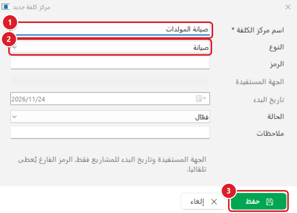
مركز كلفة جديد
+ مركز كلفة جديد.
الجهة المستفيدةو
تاريخ البدءللمشاريع فقط.
حفظ3.
مركز الكلفة.
سند إدخال مخزني
يسجّل مواد وصلت إلى المخزن من مجهز، فتزيد أرصدتها.
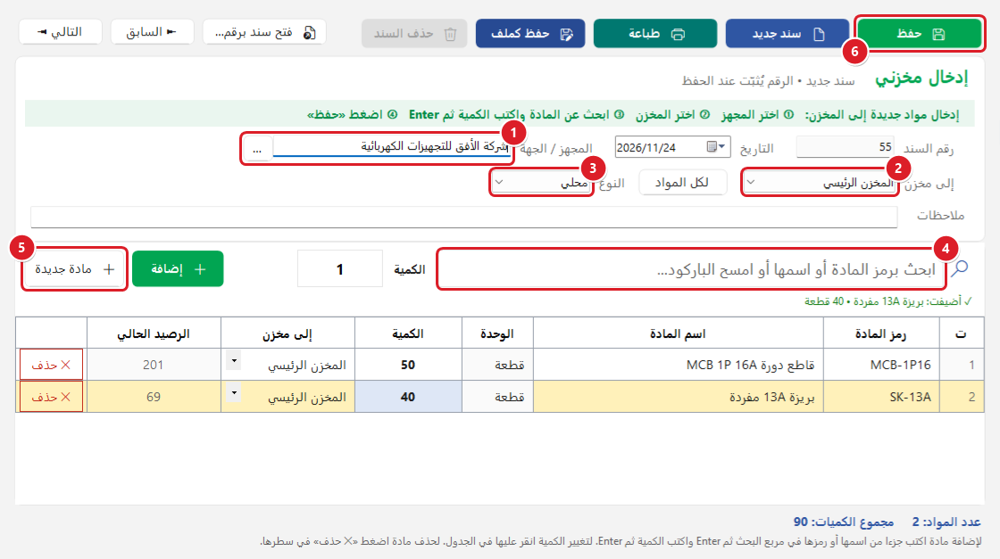
إدخال مخزنيجديد
مادة جديدة: لمادة غير موجودة في البرنامج (شرحه).
حفظ.
إدخال مخزني، أو من القائمة الجانبية
إدخال مخزني.
ملاحظاتإذا أردت.
حفظ6. في وضع المبتدئ تظهر رسالة تلخّص السند: راجعها واضغط
Yes.
إذا وصلت في فاتورة واحدة مواد توزَّع على أكثر من مخزن، اكتبها كلها في سند واحد واختر مخزن كل مادة:
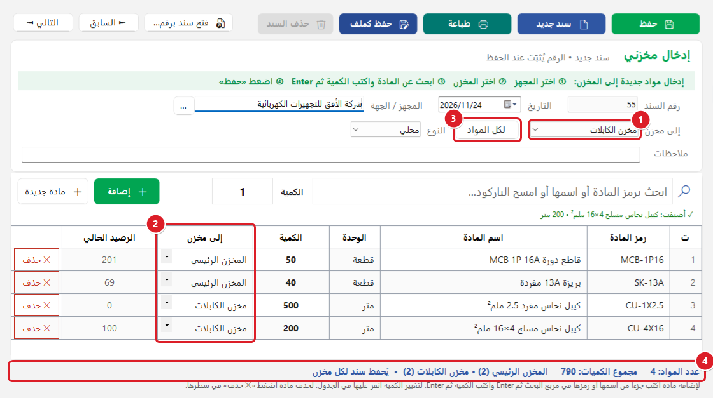
المخزن الرئيسيومادتان إلى
مخزن الكابلات
لكل المواد: ينقل كل المواد في الجدول إلى المخزن المختار 1.
يُحفظ سند لكل مخزن.
عند حفظ
يحفظ البرنامج سند إدخال لكل مخزن، وتظهر رسالة فيها رقم كل سند ومخزنه وعدد مواده. السند الأول يبقى مفتوحا أمامك، وفي ملاحظات السندات الأخرى تُكتب العبارة تابع لسند الإدخال رقم …
لتعرف أنها من الفاتورة نفسها.
إلى مخزنيظهر إذا كان لديك مخزنان أو أكثر. وإذا فتحت سندا محفوظا وغيّرت مخزن إحدى مواده، تُنقل هذه المادة إلى سند إدخال جديد باسم المخزن الآخر. مادة أُخرج منها شيء لا يمكن نقلها هكذا: استعمل النقل المخزني.
وصلت مادة لم تُضَف من قبل؟ أضفها وأنت في السند، وتبقى المواد التي كتبتها كما هي:
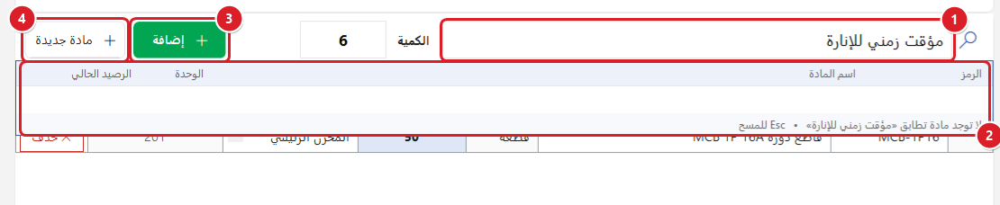
لا توجد مادة تطابق ….
+ إضافة: يسألك البرنامج
هل تريد إضافتها كمادة جديدة؟.
مادة جديدةمباشرة.
حفظ.
مادة جديدةيظهر لمن لديه صلاحية
إدارة المواد والأرصدة الافتتاحية.
سعر الوحدة، لحساب كلفة المواد. وإذا كان للمواد طلب شراء مفتوح يسألك البرنامج بعد الحفظ إن كنت تريد ربط السند به.
سند إخراج مخزني
يسجّل مواد خرجت من المخزن إلى مركز كلفة، فتنقص أرصدتها. مركز الكلفة هو المستلم.
اضغط بطاقة إخراج مخزني
في الشاشة الرئيسية (أو من القائمة الجانبية).
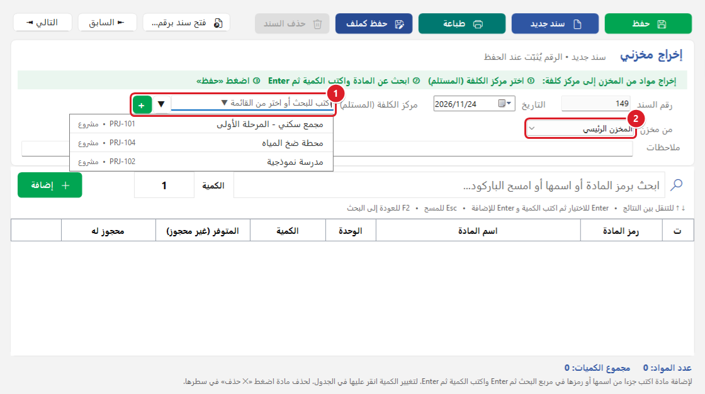
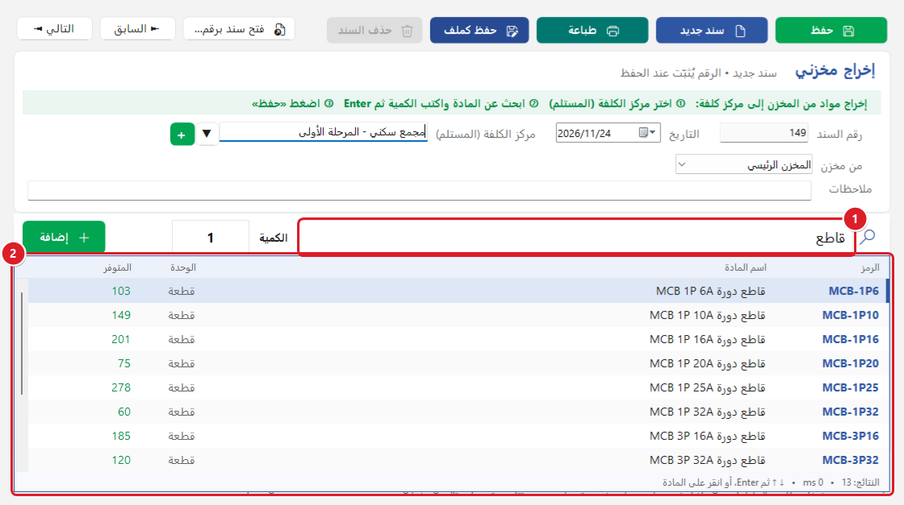
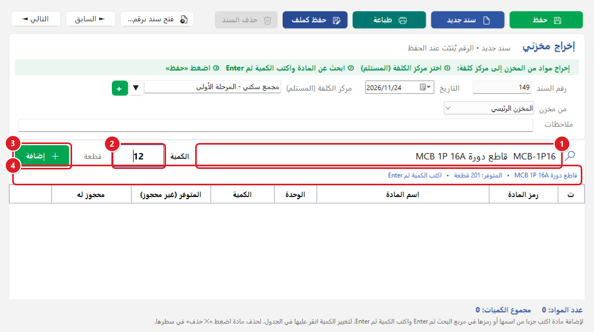
+ إضافةبالفأرة.
بعد الإضافة يعود المؤشر إلى مربع البحث لتكتب المادة التالية. إذا أضفت مادة موجودة في السند تُزاد كميتها في السطر نفسه.
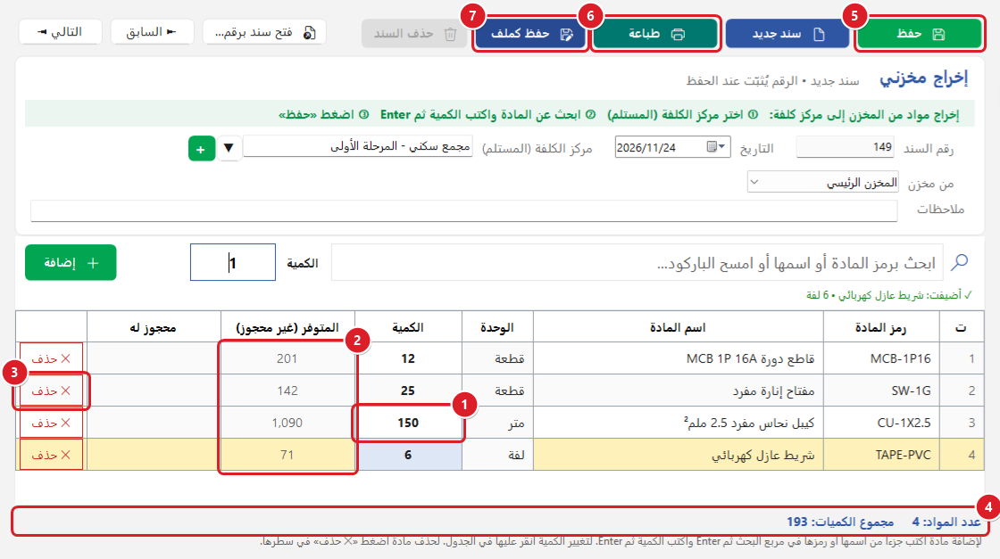
حفظ: يُثبَّت رقم السند وتنقص الأرصدة.
طباعة: إذا لم يكن السند محفوظا يطلب الحفظ أولا.
حفظ كملف: حفظ السند ملف PDF أو Excel.
أرصدة سالبة: صحّحه بسند إدخال أو بتعديل السند.
اضغط حفظ
. في وضع المبتدئ تظهر رسالة تأكيد قبل الحفظ
فيها مركز الكلفة والمخزن وعدد المواد: إذا كانت صحيحة اضغط Yes
. يظهر في أعلى السند ✓ تم الحفظ • رقم السند …
.
أزرار السند (الصورة من الوضع المتقدم حيث تُكتب الاختصارات عليها):
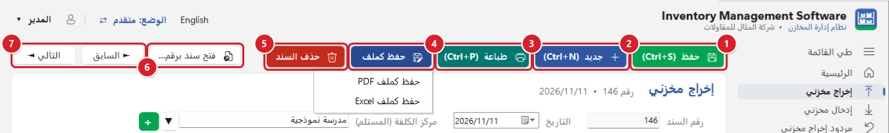
حفظCtrl+S.
جديد/
سند جديدCtrl+N: سند فارغ من النوع نفسه.
طباعةCtrl+P: تفتح نافذة المعاينة والطباعة (إذا لم يكن محفوظا يطلب الحفظ أولا).
حفظ كملف: اختر
حفظ كملف PDFأو
حفظ كملف Excel.
حذف السند: يحذفه نهائيا بعد التأكيد، وتُصحَّح الأرصدة تلقائيا.
فتح سند برقم…: اكتب رقم سند قديم لفتحه وتعديله أو طباعته.
السابقو
التالي: التنقل بين السندات المحفوظة (PageUp/PageDown في الوضع المتقدم).
زر طباعة
في أي سند يفتح نافذة معاينة قبل الطباعة
: ترى الصفحات كما ستُطبع تماما.
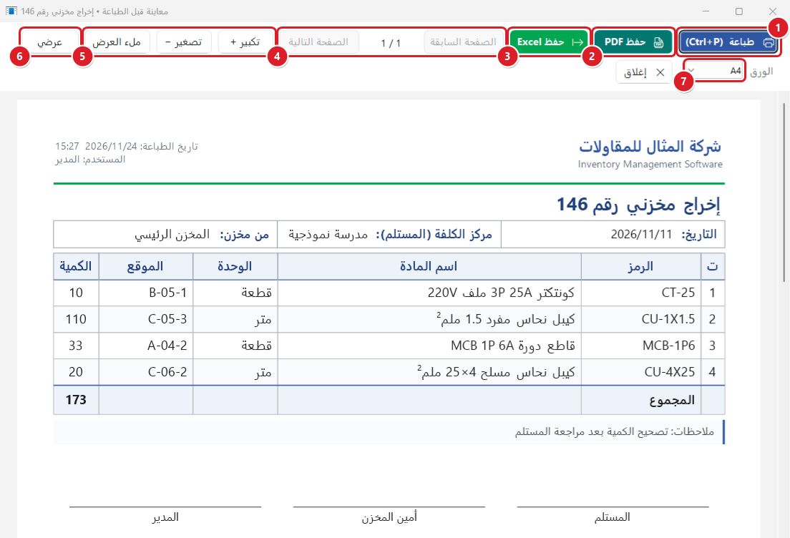
معاينة قبل الطباعة: السند جاهز مع أماكن التواقيع
طباعة: يختار الطابعة ويطبع.
حفظ PDF: يحفظ ملف PDF لترسله بالبريد أو الواتساب.
حفظ Excel: يحفظ ملف Excel.
الصفحة السابقةو
الصفحة التاليةورقم الصفحة (أو PageUp/PageDown، أو عجلة الفأرة).
تكبير +و
تصغير −و
ملء العرض: حجم الصفحة على الشاشة فقط، ولا يغيّر المطبوع (أو Ctrl مع عجلة الفأرة).
عرضي/
طولي: اتجاه الورقة. التقارير الكثيرة الأعمدة تكون عرضية تلقائيا.
الورق: A4 أو A5 أو A3 أو Letter.
حفظ كملفثم اختر PDF أو Excel (أو من نافذة المعاينة
حفظ PDF/
حفظ Excel).
Save.
هل تريد فتح الملف الآن؟.
آخر السنداتأو البحث عن مستند في الشاشة الرئيسية، أو
فتح سند برقم…، أو سجل السندات، أو من التقرير)، غيّر ما تريد، ثم
حفظ. إذا خرجت من السند دون حفظ يسألك البرنامج:
يوجد تغييرات غير محفوظة… هل تريد حفظها؟
عندما تزيد مواد عن حاجة مشروع أو قسم وتعود إلى المخزن، سجّلها بسند مردود إخراج مخزني
، فتزيد الأرصدة وتنقص من كلفة مركز الكلفة.
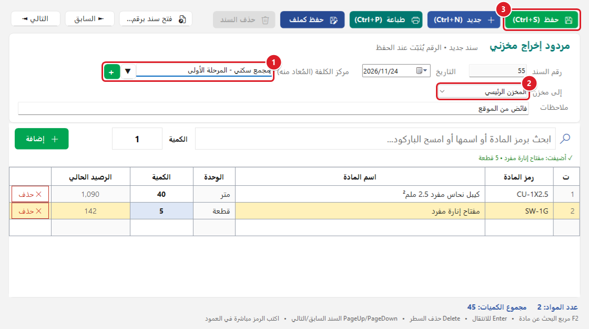
مردود إخراج مخزني
حفظ.
إضافة المواد والكميات بالطريقة نفسها كما في الإخراج المخزني.
مواد غير مطابقة تُرجع إلى المجهز: افتح مردود مشتريات
(بطاقة في الشاشة الرئيسية أو من القائمة الجانبية)، اختر المجهز (يُرجع إليه) والمخزن، أضف المواد والكميات، ثم حفظ
. تنقص الأرصدة.
مواد تالفة أو منتهية الصلاحية أو مفقودة أو متقادمة تُشطب من المخزن بـسند إتلاف. السند يحتاج اعتمادا: لا تخرج المواد من المخزن إلا بعد أن يعتمده من لديه صلاحية اعتماد سندات الإتلاف
.
مراحل السند: مسودة ← إرسال للاعتماد
← بانتظار الاعتماد ← اعتماد وترحيل
(معتمد ومُرحّل) أو رفض
(مرفوض: يعدّله صاحبه ويرسله مرة أخرى). ويمكن إلغاء السند
قبل اعتماده.
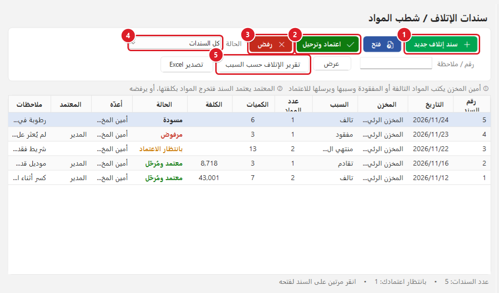
سندات الإتلاف / شطب المواد
+ سند إتلاف جديد.
اعتماد وترحيلللسند المختار (للمعتمد).
رفضمع كتابة السبب.
بانتظار اعتمادك،
السندات غير المُرحّلة،
كل السندات.
تقرير الإتلاف حسب السبب.
سندات الإتلاففي القائمة الجانبية في الوضع المتقدم، ولمن لديه صلاحية الاعتماد في الوضعين. يكتب السند من لديه صلاحية
إضافة سند إخراج.
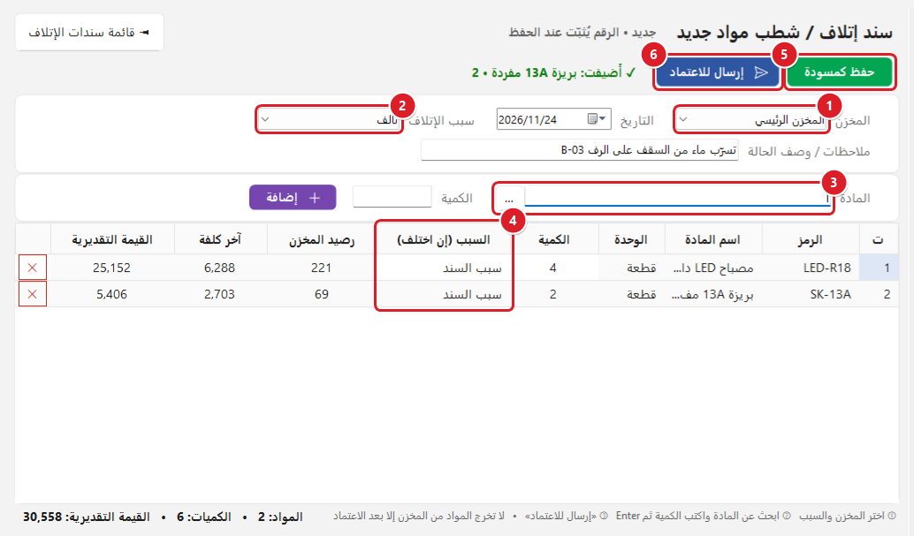
ملاحظات / وصف الحالة).
+ إضافة.
تالففيه مادة
مفقودة).
حفظ كمسودةإذا لم يكتمل.
إرسال للاعتماد.
سندات الإتلاف←
+ سند إتلاف جديد.
إرسال للاعتماد. يرى المعتمد تنبيه
سندات إتلاف بانتظار اعتمادكفي الشاشة الرئيسية.
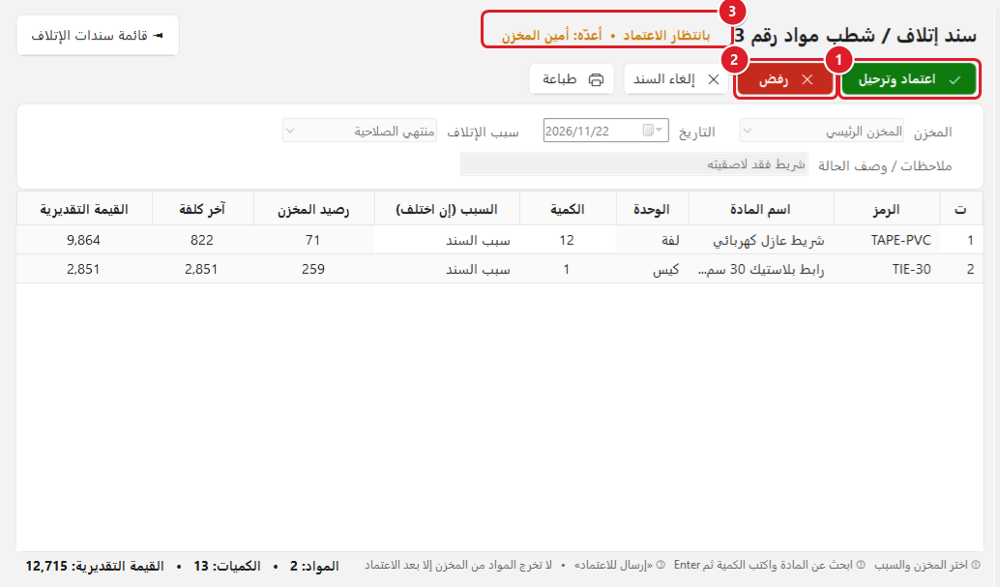
اعتماد وترحيل: تخرج المواد من المخزن بكلفتها (الوارد أولا صادر أولا) ويصبح السند معتمد ومُرحّل. بعدها لا يمكن تعديله أو حذفه.
رفض: يطلب كتابة سبب الرفض، ويعود السند لمن أعدّه ليصحّحه.
إتلاف / شطب.
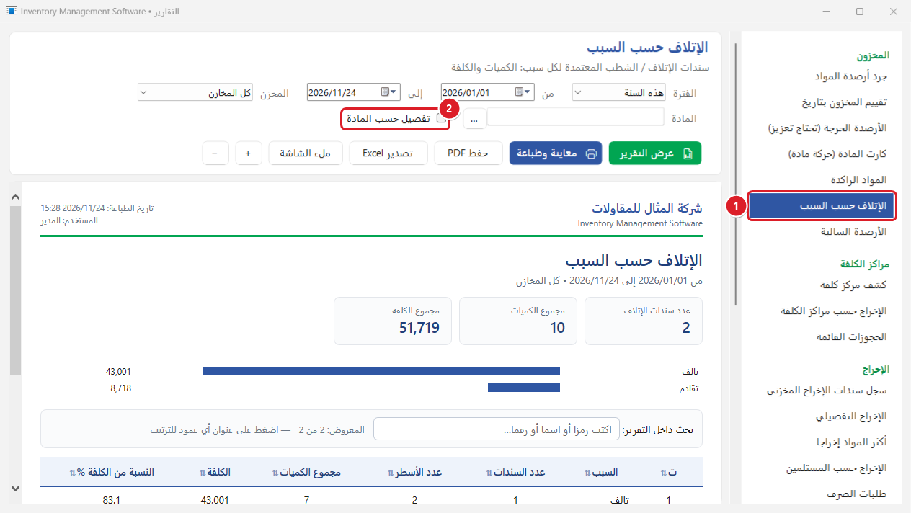
الإتلاف حسب السبب
الإتلاف حسب السببفي مجموعة
المخزونفي نافذة التقارير: لكل سبب عدد السندات والكميات والكلفة ونسبتها، مع رسم بياني.
تفصيل حسب المادة: كل مادة أُتلفت مع التاريخ ورقم السند والسبب والكلفة.
لنقل مواد من مخزن إلى آخر (مثلا من المخزن الرئيسي إلى مخزن الموقع). الرصيد الكلي لا يتغير: ينقص من الأول ويزيد في الثاني.
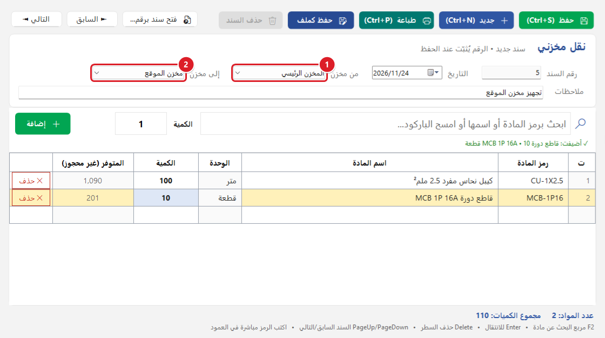
نقل مخزني
نقل مخزني.
حفظ.
الحجز يثبّت كميات لمركز كلفة معين: المواد تبقى في المخزن، لكن لا يمكن إخراجها لمركز كلفة آخر. مفيد عندما تشتري مواد لمشروع وتريد ضمان بقائها له.
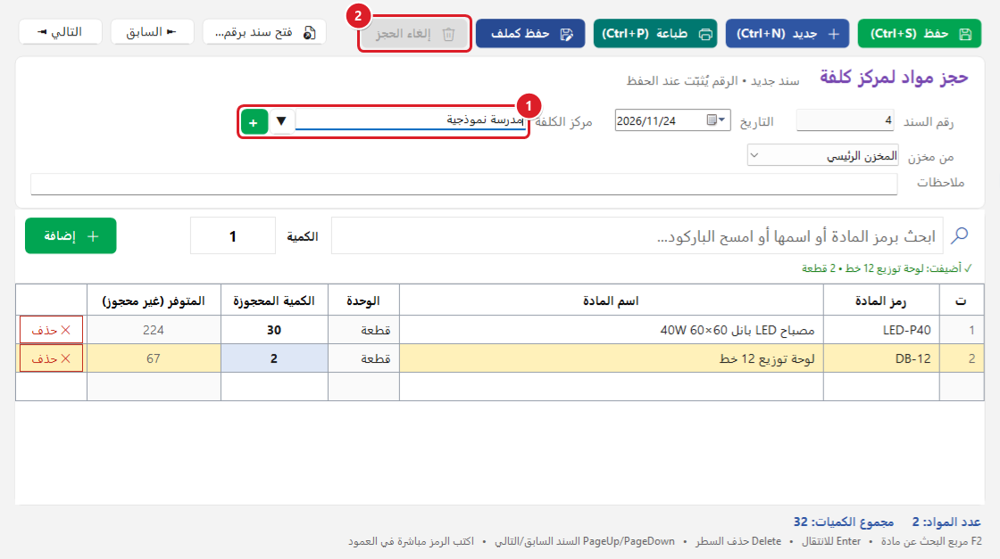
حجز مواد لمركز كلفة
إلغاء الحجز: تصبح المواد متاحة للجميع (يبقى السند محفوظا كملغى).
حجز موادأو
حجز مواد لمركز كلفةفي القائمة (أو زر
حجز موادفي شاشة مراكز الكلفة).
الكمية المحجوزة.
حفظ.
عند إخراج مواد لهذا المركز يظهر في السند عمود محجوز له
، وتُخصم الكمية من الحجز تلقائيا. لإلغاء جزء من الحجز عدّل الكميات أو احذف السطور ثم احفظ. تقرير الحجوزات القائمة
يعرض المحجوز والمُخرج والمتبقي.
كل السندات المحفوظة في مكان واحد، للبحث عن سند قديم وفتحه.
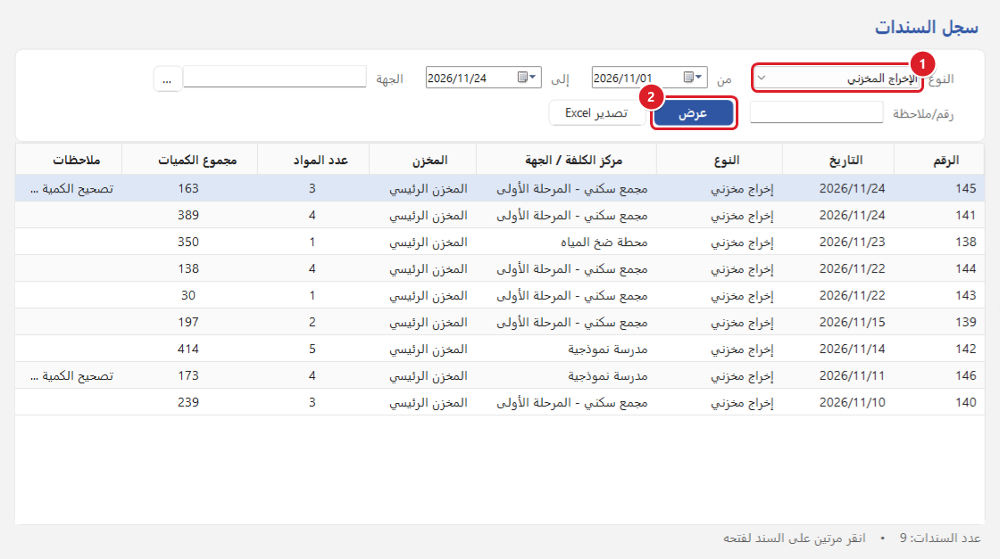
سجل السندات
عرض.
انقر مرتين على السند لفتحه. زر تصدير Excel
يحفظ القائمة في ملف Excel.
فتح سند برقم…داخل شاشة السند.
طلب الصرف يمرّ بثلاث مراحل: ① طالب المواد يكتب الطلب ويرسله للموافقة ② المعتمد يوافق أو يرفض ③ أمين المخزن يصرفه بزر صرف الطلب
(يصبح إخراجا مخزنيا).
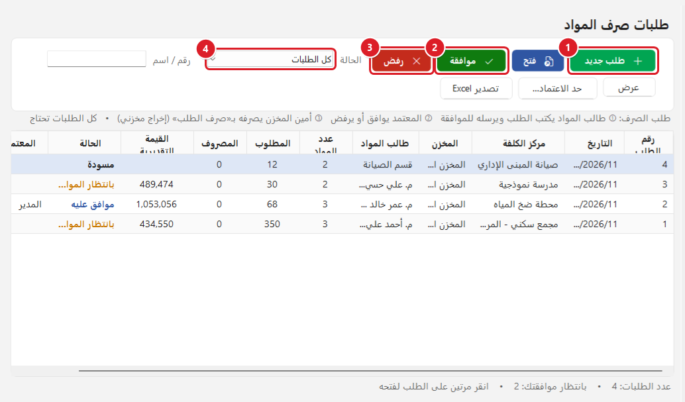
طلبات صرف المواد
+ طلب جديد.
موافقةعلى الطلب المختار (لمن لديه صلاحية
اعتماد طلبات الصرف).
رفضمع كتابة السبب.
بانتظار موافقتك،
الطلبات المفتوحة،
كل الطلبات.
حالات الطلب: مسودة ← بانتظار الموافقة ← موافق عليه (أو مرفوض) ← صُرف جزئيا ← مكتمل. ويمكن إلغاء الطلب أو إغلاقه دون صرف المتبقي.
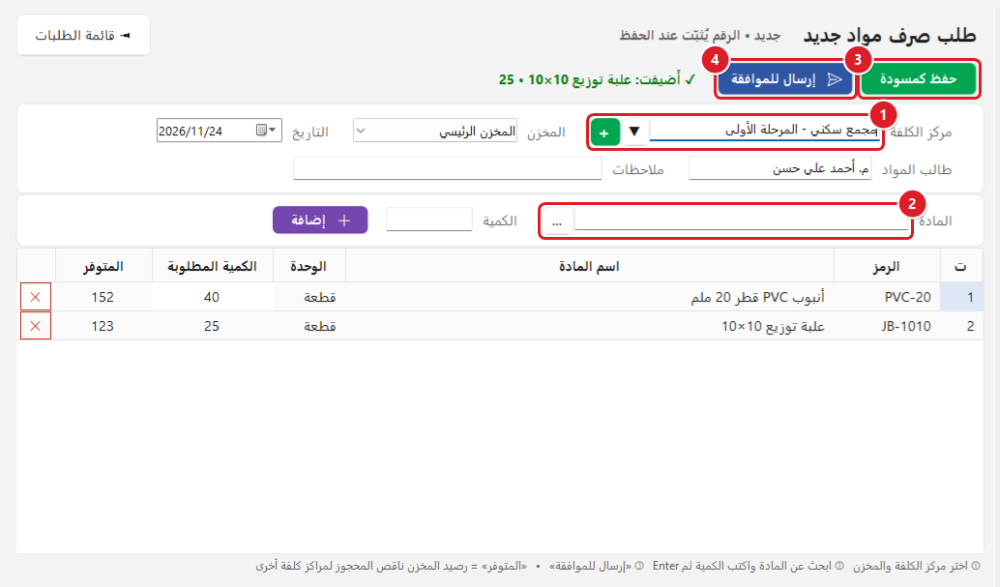
+ طلب جديد.
حفظ كمسودة3 إذا لم يكتمل، أو
إرسال للموافقة4.
حد الاعتماد…: الطلبات التي قيمتها التقديرية أقل منه تُعتمد تلقائيا عند إرسالها.
يرى المعتمد تنبيه طلبات صرف بانتظار موافقتك
في الشاشة الرئيسية. يفتح الطلب (نقرتان) ويراجع المواد والمتوفر:
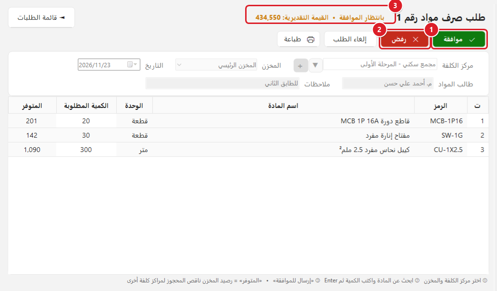
موافقة.
رفض: يطلب كتابة سبب الرفض، ويعود الطلب لصاحبه ليعدّله ويرسله مرة أخرى.
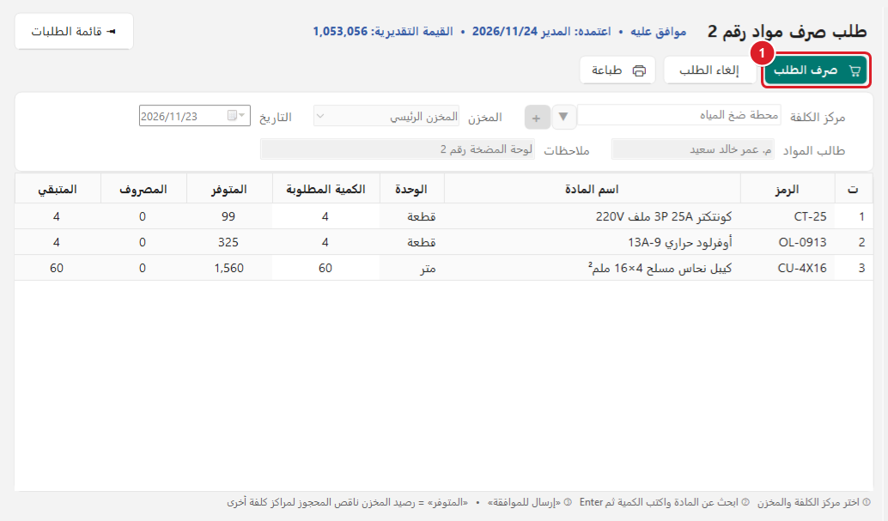
صرف الطلب1.
حفظ. يصبح الطلب
مكتملأو
صُرف جزئيا، ويمكن صرف الباقي لاحقا بالطريقة نفسها.
طلب الشراء قائمة مواد تحتاج شراءها، تطبعها وترسلها للمجهز أو للمشتريات. لا يغيّر الأرصدة. عند وصول المواد تُسجَّل بإدخال مخزني ويُربط بالطلب.
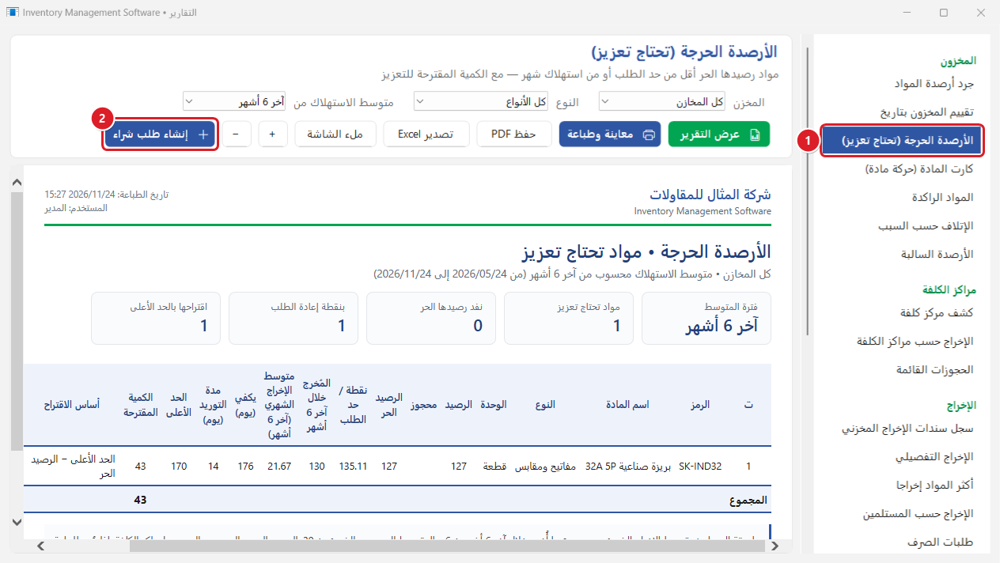
الأرصدة الحرجة (تحتاج تعزيز)
التقاريرواختر
الأرصدة الحرجة (تحتاج تعزيز)1 (أو اضغط تنبيه
أرصدة حرجة تحتاج تعزيزفي الشاشة الرئيسية). اختر المخزن إذا أردت ثم
عرض التقرير.
إنشاء طلب شراء2: يُنشأ طلب شراء (مسودة) بالكميات المقترحة. إذا كان لبعض المواد طلب مفتوح يسألك هل تتخطاها.
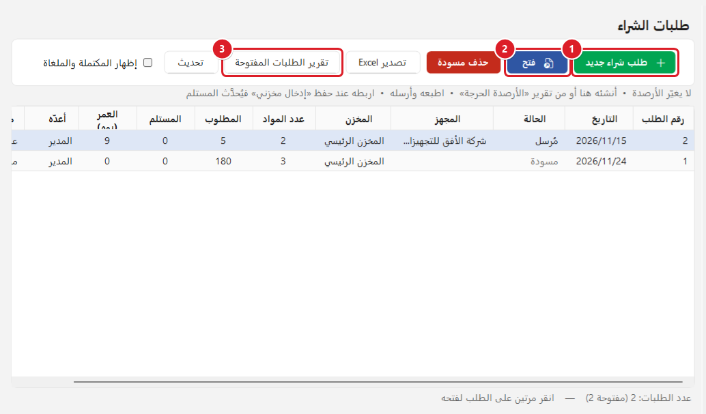
طلبات الشراء
+ طلب شراء جديدتكتب موادّه بنفسك.
فتحالطلب المختار (أو نقرتان على سطره).
تقرير الطلبات المفتوحة: المطلوب والمستلم والمتبقي لكل مادة وعمر الطلب بالأيام.
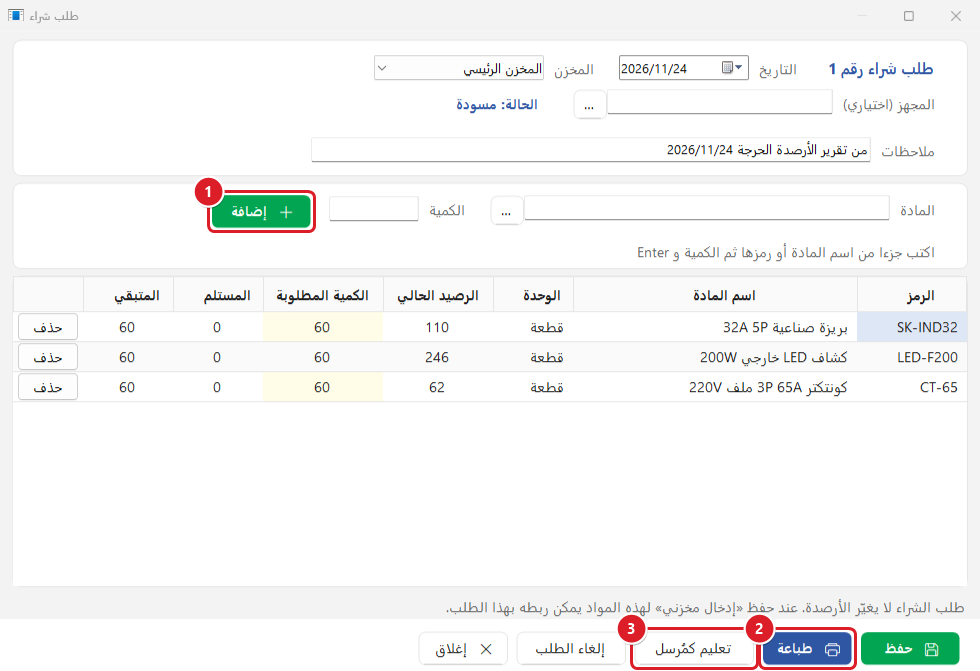
طلب شراء
+ إضافة.
طباعةالطلب لإرساله.
تعليم كمُرسلبعد إرساله للمجهز.
عند حفظ إدخال مخزني لهذه المواد يسألك البرنامج عن ربطه بالطلب، فيتحدّث المستلم والمتبقي وتتغير الحالة إلى مستلم جزئيا
أو مكتمل
تلقائيا.
الجرد الفعلي يقارن الكمية الموجودة فعلا على الرفوف بالرصيد في البرنامج، ثم يسوّي الفروقات.
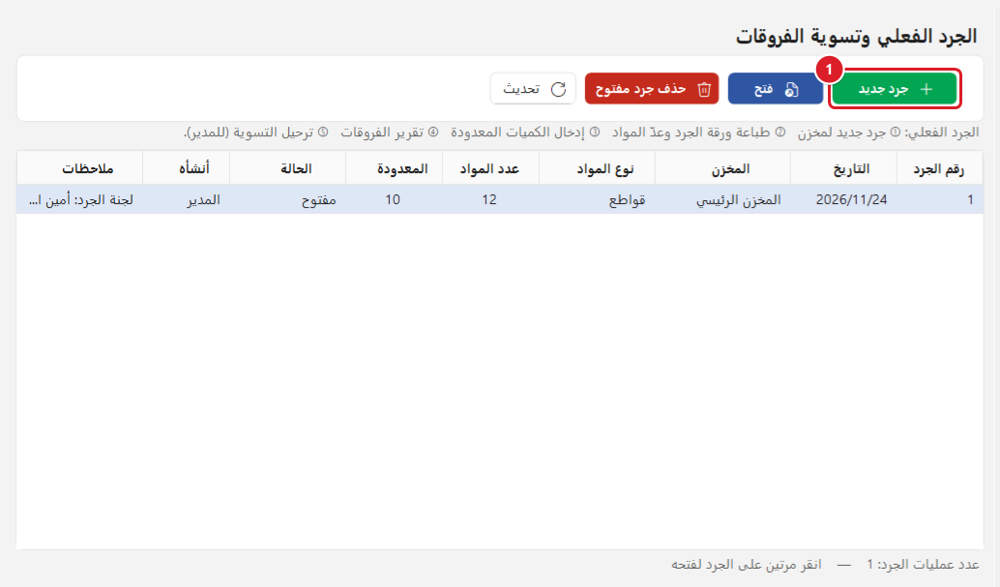
الجرد الفعلي وتسوية الفروقات
+ جرد جديد1.
إنشاء الجرد.
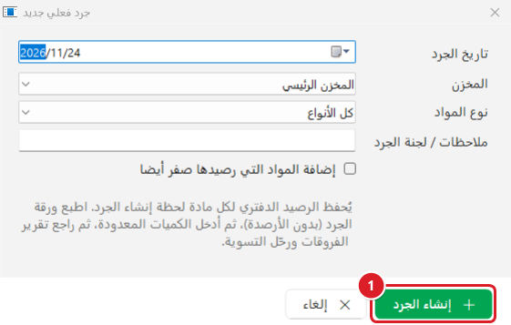
جرد فعلي جديد
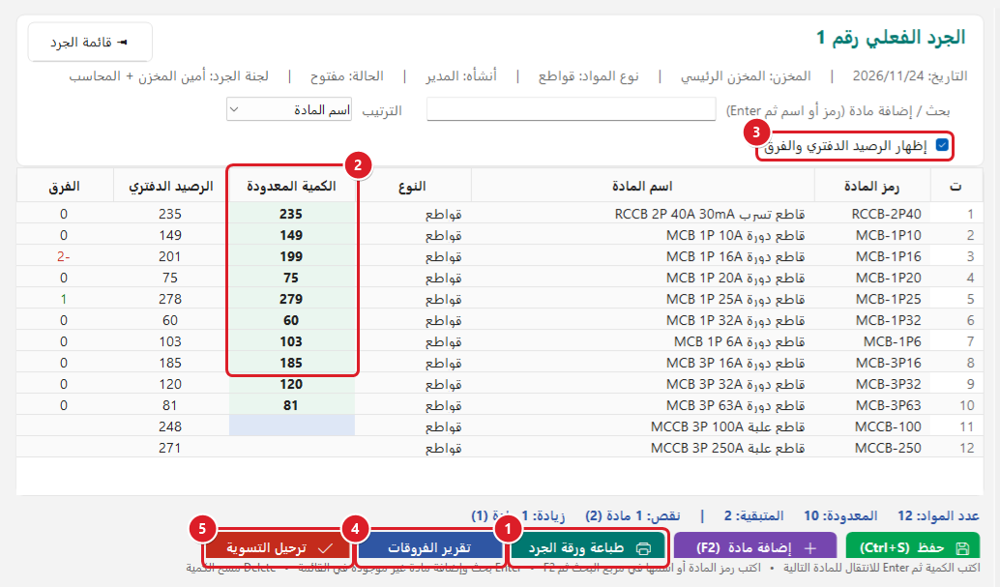
طباعة ورقة الجرد: ورقة بأسماء المواد ومواقعها دون الأرصدة، تعطيها للجنة لتكتب ما تعدّه.
إظهار الرصيد الدفتري والفرق: الفرق الأحمر نقص، والموجب زيادة.
تقرير الفروقات: للمراجعة والتوقيع.
ترحيل التسوية: يُنشئ سند نقص (إخراج) وسند زيادة (إدخال) بالفروقات، فتصبح الأرصدة مطابقة للعدّ، ويُقفل الجرد.
بحث / إضافة مادةواضغط Enter، أو
+ إضافة مادةF2.
التقارير تُفتح في نافذة منفصلة، فيبقى السند الذي تكتبه مفتوحا في النافذة الرئيسية. اضغط التقارير
في القائمة الجانبية.
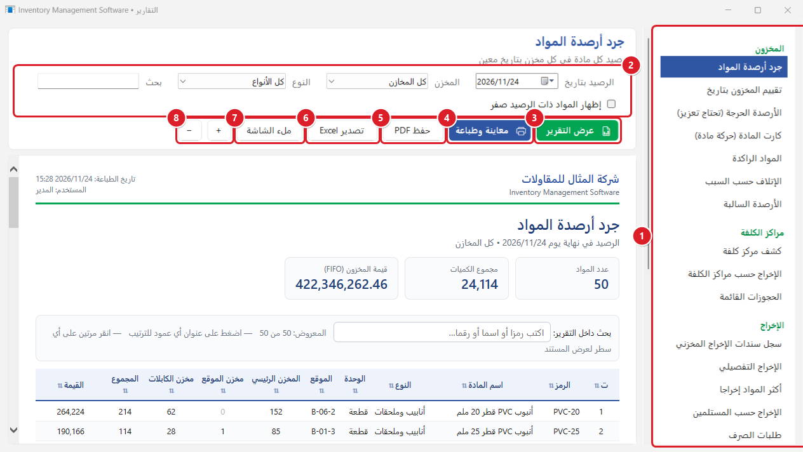
التقاريروفيها تقرير
جرد أرصدة المواد
عرض التقرير.
معاينة وطباعة: يفتح نافذة معاينة قبل الطباعة.
حفظ PDF: يحفظ التقرير ملف PDF مباشرة.
تصدير Excel: يحفظ التقرير ملف Excel.
ملء الشاشة: التقرير في نافذة كبيرة.
عرض التقرير3.
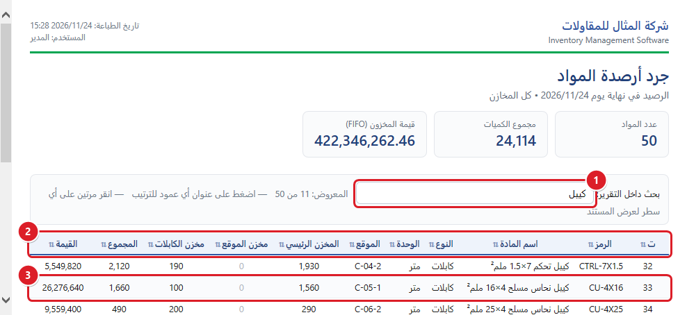
معاينة وطباعةو
حفظ PDFيأخذان التقرير كما تراه الآن: السطور التي وجدها البحث وبالترتيب الذي اخترته. أما
تصدير Excelفيحفظ التقرير كاملا.
عندما تمر بالفأرة على السطر يتحول المؤشر إلى يد. انقر مرتين فيُعرض ما يخص السطر:
فتح المستند للتعديل: يفتح السند في النافذة الرئيسية لتعديله أو حذفه. إذا لم ترد التعديل أغلق النافذة (Esc) فتعود إلى التقرير.
| التقرير | ماذا يعرض |
|---|---|
| جرد أرصدة المواد | رصيد كل مادة في كل مخزن بتاريخ معين، مع القيمة. |
| تقييم المخزون بتاريخ متقدم | كمية وقيمة كل مادة بتاريخ معين بطريقة FIFO (شرحه). |
| الإتلاف حسب السبب متقدم | سندات الإتلاف المعتمدة لكل سبب: الكميات والكلفة (شرحه). |
| الأرصدة الحرجة (تحتاج تعزيز) | مواد رصيدها الحر أقل من حد الطلب أو من استهلاك شهر، مع الكمية المقترحة وإنشاء طلب شراء. |
| كارت المادة (حركة مادة) | كشف حساب المادة: كل حركاتها مع الرصيد بعد كل حركة. يُفتح أيضا من البحث السريع. |
| كشف مركز كلفة | كل ما أُخرج لمركز الكلفة وما أُعيد منه والصافي والكلفة. |
| الحجوزات القائمة | المحجوز والمُخرج والمتبقي لكل مركز كلفة. |
| سجل سندات الإخراج / الإدخال | قائمة السندات خلال فترة. |
| المواد الراكدة متقدم | مواد لها رصيد ولم يُخرج منها شيء منذ تاريخ معين. |
| الأرصدة السالبة متقدم | مواد رصيدها أقل من صفر وتحتاج مراجعة. |
| الإخراج حسب مراكز الكلفة متقدم | ملخص الكميات والكلفة لكل مركز كلفة. |
| الملخص الشهري متقدم | عدد السندات والكميات لكل شهر مع رسم بياني. |
| تدقيق البيانات متقدم | يكشف الأرصدة غير المطابقة والسالبة والتواريخ المستقبلية والأرقام المكررة. |
يحسب البرنامج قيمة المخزون بطريقة الوارد أولا صادر أولا (FIFO) حسب المعيار المحاسبي IAS 2: الكمية الموجودة الآن تُسعَّر بكلفة أحدث سندات الإدخال، لأن الأقدم خرج أولا. الكلفة تأتي من أسعار الإدخال المخزني.
جرد أرصدة الموادمع القيمة
تقييم المخزون بتاريخ
تقييم المخزون بتاريخفي مجموعة
المخزون.
المواد ذات الكلفة المعروفة فقط.
عرض التقرير: لكل مادة الكمية ومتوسط كلفة الوحدة والقيمة، ومجموع قيمة المخزون في الأعلى.
تصدير Excelأو
معاينة وطباعة.
غيّر ألوان البرنامج من الإعدادات
← بطاقة المظهر
. التغيير يُطبَّق فورا ويُحفظ لك وحدك.
المظهر
فاتح،
داكن(مريح للعين في الإضاءة الخافتة)، أو
تلقائي (حسب ويندوز).
Englishفي الشريط العلوي
English1 في الشريط العلوي بجانب
الوضع(أو في أعلى بطاقة تسجيل الدخول). إذا كان سند مفتوحا بتغييرات غير محفوظة يسألك البرنامج عن حفظها أولا.
عربي1 في المكان نفسه.
اضغط الإعدادات
في أسفل القائمة الجانبية. بعض البطاقات تظهر للمدير فقط.
الإعدادات(كما يراها المدير)
الاتصال بالبيانات: أين البيانات الآن، و
تغيير الاتصال…(للمدير).
المظهر(شرحه).
نسخة احتياطية(شرحها).
الإعدادات العامة: اسم الشركة والشعار (شرحها).
التحديثات والدعم:
تحديث البرنامجو
تبليغ عن مشكلة(شرحها).
إقفال السنة(شرحه).
دليل الاستخدام: يفتح هذا الدليل.
قفل الفترات الشهرية(شرحه).
سجل التدقيق: من عدّل أو حذف ماذا ومتى (شرحه).
وفي الشاشة نفسها: ضغط وإصلاح ملف البيانات
(يقلل حجم الملف؛ يجب أن يخرج الجميع من البرنامج أولا)، إعادة احتساب الأرصدة
(يصحح الأرصدة من الحركات)، تدقيق البيانات
، وسجل العمليات في الأسفل: آخر 300 عملية مع الوقت والمستخدم والحاسوب.
الإعدادات العامة
تعديل…في بطاقة
الإعدادات العامة.
اختيار صورة…2 لشعار الشركة (PNG أو JPG). بدون شعار يظهر اسم الشركة.
حفظ. يظهر الاسم والشعار في الشاشات والتقارير المطبوعة وملفات Excel بعد إعادة فتح البرنامج.
المستخدمون والصلاحيات
حفظ.
لتغيير اسم المستخدم اكتبه في اسم المستخدم
. لإعطائه كلمة مرور جديدة اكتبها في كلمة مرور جديدة
؛ اتركها فارغة لإبقاء القديمة.
بعد مراجعة سندات شهر ومطابقتها مع المحاسبة، اقفل الشهر حتى لا يغيّر أحد سنداته بالخطأ. يحتاج صلاحية قفل وفتح الفترات الشهرية
(للمدير، ويعطيها لغيره من المستخدمون).
قفل الفترات الشهرية
قفل حتى نهاية الشهرثم أكّد.
فتح قفل …: يفتح القفل للتصحيح فقط؛ أعد القفل بعده.
شهر … مقفل، ويُفتح السند القديم للعرض والطباعة فقط.
آخر عمليات القفل والفتحأسفل النافذة.
يحفظ البرنامج كل تعديل أو حذف في السندات والمواد ومراكز الكلفة، مع القيمة قبل التعديل وبعده: من غيّر، ماذا، ومتى. افتحه من الإعدادات
← سجل التدقيق
← عرض السجل…
(لمن لديه صلاحية التقارير).
سجل التدقيق
التعديلات والحذف فقطيخفي الإضافات العادية. ثم
عرض.
نسخة الآن: نسخة فورية (مثلا قبل عمل كبير).
فتح المجلد: يفتح مجلد النسخ.
إعدادات الاتصال). اسأل المسؤول إذا لم تكن متأكدا.
إقفال السنة
بعد انتهاء السنة ومراجعة سنداتها:
الإعداداتاضغط
إقفال السنة….
أخذ نسخة احتياطية قبل الإقفالو
حفظ جرد نهاية السنة (Excel)معلَّمين.
إقفال السنة2 ثم أكّد.
إعادة فتحآخر سنة مقفلة إذا احتاج تصحيحا، ثم يقفلها من جديد.
إذا كان أكثر من حاسوب يعمل على البرنامج في نفس الوقت، ضع البيانات على سيرفر (SQL Server Express مجاني). يتم ذلك مرة واحدة من نافذة إعدادات الاتصال والسيرفر
(الرقم 5 في صورة الاتصال).
إعدادات الاتصال والسيرفرواضغط
السيرفر الرئيسي. تختار كلمة سر السيرفر، ثم ينصّب البرنامج السيرفر المجاني بدون إنترنت (عادة 4 إلى 10 دقائق أول مرة) وينقل البيانات إليه. يحتاج صلاحيات المدير على ويندوز.
سيرفر ثانوي. يجد البرنامج السيرفر الرئيسي في الشبكة ويتصل به بعد كتابة كلمة سر السيرفر مرة واحدة.
المتصلون الآن، وفي
الإعدادات
العمل المشترك عبر السيرفر مفعّل ✓.
السيرفر الرئيسي. يفحص البرنامج الملف ثم ينصّبه.
السيرفر الرئيسي • حزمة SQL Server
اختيار الملف من فلاش أو الشبكة(الأسرع، بدون إنترنت): اختر الملف SQLEXPR_x64_ENU.exe من مجلد مكونات.
تنزيل من الإنترنت (266 ميغابايت): يعرض النسبة والسرعة والوقت المتبقي، ويُكمل من حيث توقف إذا انقطع الاتصال، ويمكن إيقافه بزر
إلغاء التنزيل.
إلغاء: لا يتغير شيء، وتعيد المحاولة لاحقا.
⬆ يتوفر إصدار جديد … اضغط هنا للتحديث.
الإعدادات←
التحديثات والدعم←
تحديث البرنامج.
تحديث البرنامجفي شاشة تسجيل الدخول (لا يحتاج كلمة مرور).
بلا إنترنت على الحاسوب: انقل ملف التنصيب Inventory-Management-Setup على فلاش وشغّله، فيستبدل النسخة القديمة (شرحه).
لا توجد صلاحية كتابة في مجلد البرنامج: أغلق البرنامج، ثم زر الفأرة الأيمن على أيقونته ←
Run as administratorوأعد التحديث.
تبليغ عن مشكلة
الإعدادات←
التحديثات والدعماضغط
تبليغ عن مشكلة.
إرفاق صورة شاشة البرنامجو
إرفاق المعلومات الفنيةمعلَّمين ثم اضغط
إرسال التبليغ2.
| المفتاح | العمل | أين |
|---|---|---|
| F1 | فتح دليل الاستخدام | النافذة الرئيسية |
| Ctrl+F أو F3 | البحث السريع عن مادة وفتح كشف حسابها | النافذة الرئيسية |
| F5 | تحديث التنبيهات وآخر السندات | الشاشة الرئيسية |
| Ctrl+S | حفظ | السندات، طلب الصرف، الجرد |
| Ctrl+N | سند جديد | السندات |
| Ctrl+P | طباعة (نافذة المعاينة) | السندات، طلب الصرف، ورقة الجرد، نافذة المعاينة |
| F2 | الانتقال إلى مربع البحث عن مادة / إضافة مادة للجرد | السندات، الجرد |
| ↓ ↑ | التنقل بين نتائج البحث | مربع البحث عن مادة |
| Enter | اختيار المادة، ثم إضافة السطر بعد كتابة الكمية؛ الانتقال للمادة التالية في الجرد | السندات، الجرد |
| Esc | مسح مربع البحث؛ إغلاق النافذة الصغيرة أو نافذة المعاينة أو نافذة التقارير | كل مكان |
| Delete | حذف السطر المختار | جدول السند |
| PageUp / PageDown | السند السابق / التالي؛ الصفحة السابقة / التالية | السندات (الوضع المتقدم)؛ نافذة المعاينة |
| Ctrl++ / Ctrl+- | تكبير / تصغير على الشاشة (أو Ctrl مع عجلة الفأرة في المعاينة) | نافذة المعاينة، التقرير بملء الشاشة |
بطاقة مادة(شرحها).
الوضع: مبتدئ ⇄في أعلى الشاشة. إذا بقيت مخفية فليست لديك الصلاحية: اسأل المدير.
بطاقة مادةوعلّم
إظهار المجمدة)، أو غير مضافة بعد: أضفها من بطاقة مادة، أو من سند الإدخال نفسه بزر مادة جديدة.
تابع لسند الإدخال رقم …. إذا كان ذلك خطأ: افتح السند التابع واحذفه، ثم أضف مواده إلى السند الأول. لتجنبه اضغط
لكل الموادقبل الحفظ (شرحه).
حفظ كملف←
حفظ كملف PDF، أو
طباعةثم
حفظ PDF(شرحه). لا تحتاج طابعة ولا إنترنت. إذا ظهرت رسالة
تعذر إنشاء ملف PDFففعّل Microsoft Print to PDF من إعدادات ويندوز ← الميزات الاختيارية.
الأرصدة السالبةو
كارت المادةيساعدانك في معرفة السبب.
الإعدادات ← قفل الفترات الشهريةللتصحيح ثم يعيده، أو يكون التصحيح بسند جديد بتاريخ اليوم.
اعتماد وترحيل. افتح
سندات الإتلافوتأكد أن حالته معتمد ومُرحّل، لا بانتظار الاعتماد (شرحه).
السيرفر الرئيسيمرة ثانية.
الورقالمناسب لطابعتك (A4 عادة)، وجرّب
عرضيللتقارير الكثيرة الأعمدة. ما تراه في المعاينة هو ما سيُطبع.
هل تريد فتح الملف الآن؟. إذا لم يُفتح فليس على الحاسوب برنامج يفتح ملفات xlsx: ثبّت Excel أو LibreOffice، أو افتح الملف المحفوظ على حاسوب آخر.
الإعداداتشغّل
ضغط وإصلاح ملف البيانات(بعد خروج الجميع من البرنامج). وللعمل من عدة حواسيب استعمل السيرفر.